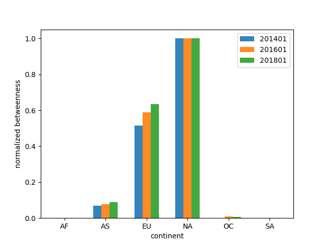
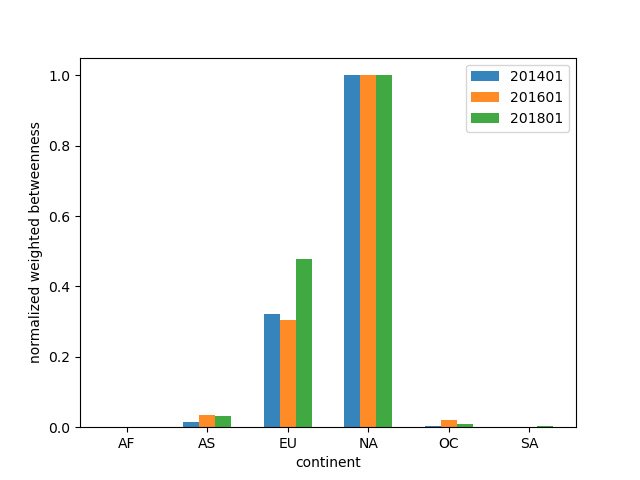
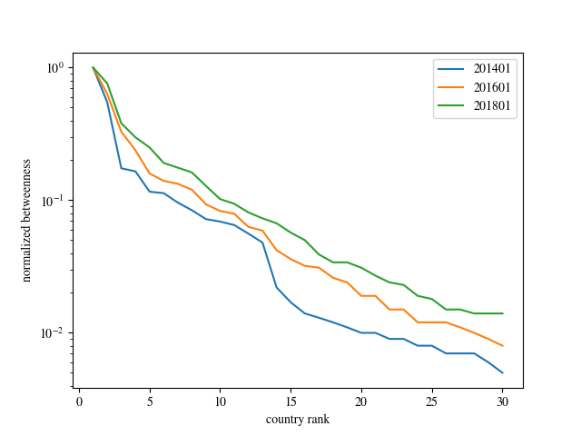
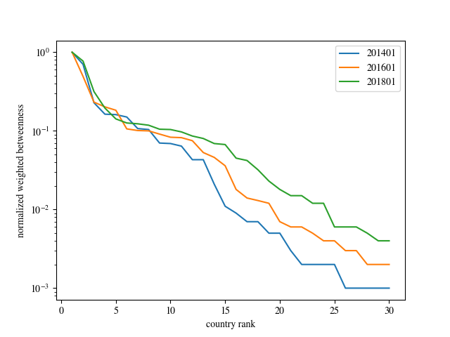

基于中介中心性的关键节点识别
中介中心性衡量的是一个节点作为其他两个节点的路径的传输桥梁的次数。在互联网中，一个具有高中介中心性的节点拥有对互联网更强的控制能力，因为用更多的流量会穿越这个节点。
对于一个节点`v`的中介中心性` C_{B}(v) `可以用下面的公式计算：
其中` \sigma _{st} `代表从节点s到节点t全部路径数量，` \sigma _{st}(v) `代表从节点s到节点t的路径中穿过节点v的数量。但这种计算方法会受到节点数量的影响。为了能够比较不同时间的不同数量的数据集的中介中心性，我们定义了标准化的中介中心性` \overline{C_{B}}(v) `通过下面的公式计算：
最重要的节点的标准化中介中心性是1，最不重要的节点的标准化中介中心性是0。
另一个问题是每个节点对都被认为是相同的权重，这意味着任意两个节点通讯的重要程度都被视为是相同的。但是一些节点之间会传输更多的流量，或者某些节点之间的通讯更加频繁，所以应当被视为更重要的路径。我们定义节点`s`到节点`d`之间的通讯频率为`w_{st}`，我们用traceroute数据集中节点$s$到节点$d$之间的IP路径的数量来估计这个值，也就是说`w_{st}=\sigma _{st}`。我们可以定义加权的中介中心性` C_{B}^{w}(v) `可以通过下面的式子计算：
为了能够比较不同时间的数据，我们使用相同的方法对加权中介中心性进行标准化。

标准化中介中心性 |

标准化加权中介中心性 |
我们首先利用中介中心性研究大洲的重要程度，如上图所示，展示了大洲的标准化中介中心性以及加权的中介中心性。我们可以看出无论是否加权，亚洲和欧洲的重要程度都在增加，而北美洲的重要程度没有改变，一直是最高的，这意味着北美洲在洲际传输的流量中扮演者重要的角色。
除了对每个大洲的中介中心性进行排名，我们还研究是否存在两个大洲之间的路径有很多穿越第三个大洲，也就是说找到`(s,t,v)`三元组当中`\frac{\sigma _{st}(v)}{\sigma _{st}}`最大的三元组。上表展示了这一结果。以第一行为例，从南美洲到亚洲的100%的路径都要经过北美洲，已完成数据的传输。为了防止由于数据量较少带来的测量偏差，我们不考虑`\sigma _{st}`小于1000的`(s,t,v)`三元组。

标准化中介中心性 |

标准化加权中介中心性 |
类似的我们还计算了国家的标准化中介中心性，如上图所示。我们展示了排名最高的三十个国家的标准化中介中心性以及加权中介中心性。显然，随着排名的往后，国家的重要性下降得很快，而且可以看出随着时间的推移，排名靠前的国家的中介中心性在上升；这意味着互联网中占支配地位的国家的支配程度越来越严重，互联网中的幂律分布现象越来越严重。
标准化中介中心性最高的十个国家

标准化加权中介中心性最高的十个国家
上表分别展示了标准化中介中心性和标准化加权中介中心性；除了标准化加权中介中心性2014年的例外，在其他数据集中中介中心性最高的四个国家都是美国、英国、法国和德国。在所有情况下，美国的中介中心性永远是最高的，而且远比其他国家要高。
同样的，我们研究国家级别的所有` (s,t,v) `三元组当中` \frac{\sigma _{st}(v)}{\sigma _{st}}>0.95 `且`\sigma _{st}>1000`的三元组。以前两行为例，从巴西到中国的流量全部（100%）穿越美国，从墨西哥出发到达中国的流量全部穿越美国。